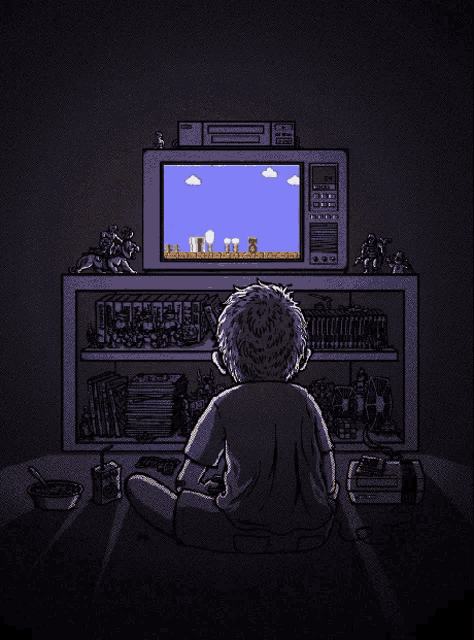

¡Bienvenido a "Aprende a Jugar Videojuegos"! En esta página, encontrarás recursos y tutoriales diseñados para ayudarte a aprender a jugar videojuegos desde cero. Nuestro objetivo es proporcionarte información básica, consejos y técnicas esenciales para que puedas disfrutar plenamente de los videojuegos.
Explora nuestra colección de tutoriales, donde aprenderás desde conceptos básicos hasta técnicas avanzadas. Ya sea que seas un principiante absoluto o alguien que desee mejorar sus habilidades, aquí encontrarás contenido útil y práctico que te ayudará a dominar tus juegos favoritos.
Bienvenido futuro Gamer,A continuacion encontraras tutoriales que te ayudaran a iniciar en el mundo del Gaming.
-
Tutorial de Movimiento en Juego
En este tutorial, aprenderás los conceptos básicos del movimiento en el juego . Exploraremos cómo moverte, saltar y esquivar obstáculos en diferentes escenarios. ¡Domina el control de tu personaje y mejora tu habilidad de navegación en el juego!
Pasos del tutorial:
- Aprende a moverte: Utiliza las teclas de dirección o el joystick para desplazarte por el entorno del juego.
- Salta con precisión: Practica saltar en momentos clave para superar obstáculos o alcanzar plataformas elevadas.
- Esquiva obstáculos: Aprende a anticiparte a los obstáculos y esquivarlos mediante movimientos rápidos o saltos laterales.
- Mejora tu tiempo de reacción: Trabaja en mejorar tu tiempo de respuesta para realizar movimientos rápidos y precisos en el juego.
- Practica en diferentes escenarios: Encuentra niveles o áreas en el juego donde puedas practicar y mejorar tus habilidades de movimiento.
Con dedicación y práctica, podrás dominar el movimiento en el juego y mejorar tu habilidad de navegación. ¡Diviértete jugando y explora todo lo que el juego tiene para ofrecer!
Tutorial de Estrategias de Combate en Juego
En este tutorial, te enseñaremos estrategias de combate efectivas para el juego. Descubrirás diferentes técnicas de ataque, defensa y cómo aprovechar al máximo las habilidades de tu personaje. ¡Mejora tu destreza en el combate y conviértete en un adversario formidable!
Pasos del tutorial:
- Conoce tu personaje: Familiarízate con las habilidades y movimientos especiales de tu personaje en el juego.
- Ataque estratégico: Aprende a realizar combinaciones de ataques y aprovecha los momentos oportunos para golpear a tus oponentes.
- Defensa sólida: Domina las técnicas de bloqueo, esquiva y contraataque para protegerte de los ataques enemigos.
- Uso de habilidades especiales: Descubre cómo utilizar las habilidades especiales de tu personaje de manera efectiva para obtener ventajas durante el combate.
- Estudia a tus oponentes: Observa los patrones de comportamiento de tus oponentes y busca oportunidades para explotar sus debilidades.
- Practica el timing: Trabaja en mejorar tu tiempo de reacción y el momento adecuado para ejecutar tus acciones de combate.
Con paciencia y práctica, podrás mejorar tus habilidades de combate y convertirte en un adversario formidable. ¡Desafía a tus oponentes y disfruta de la emoción del combate en el juego!
Tutorial de Construcción en Juego
En este tutorial, exploraremos los fundamentos de la construcción en el juego. Aprenderás cómo construir estructuras básicas, cómo utilizar diferentes materiales y cómo aprovechar al máximo las herramientas de construcción disponibles. ¡Conviértete en un maestro constructor y crea tus propios diseños únicos!
Pasos del tutorial:
- Conoce los materiales: Aprende sobre los diferentes materiales de construcción disponibles en el juego y sus características.
- Planifica tus diseños: Antes de comenzar a construir, piensa en el diseño y la funcionalidad que deseas lograr.
- Construye estructuras básicas: Aprende cómo colocar bloques y crear estructuras simples como paredes, pisos y techos.
- Utiliza herramientas de construcción: Explora las herramientas de construcción disponibles y descubre cómo pueden facilitar tu trabajo.
- Experimenta con diseños avanzados: Una vez que domines las estructuras básicas, desafíate a ti mismo y crea diseños más complejos y únicos.
- Combina estilos y materiales: Aprovecha la variedad de materiales y estilos de construcción para crear diseños visualmente interesantes.
Con práctica y creatividad, podrás convertirte en un maestro constructor en el juego y dar vida a tus propios diseños únicos. ¡Explora tu imaginación y crea estructuras impresionantes!
Tutorial de Estrategias de Equipo en Juego
En este tutorial, descubrirás las mejores prácticas para jugar en equipo en el juego. Aprenderás cómo comunicarte eficientemente con tus compañeros de equipo, cómo coordinar ataques y defensas, y cómo maximizar la sinergia entre los diferentes roles del equipo. ¡Mejora tu juego en equipo y lleva a tu equipo a la victoria!
Pasos del tutorial:
- Comunicación efectiva: Aprende a comunicarte claramente con tus compañeros de equipo utilizando herramientas de chat de voz o texto.
- Coordinación de ataques: Practica la coordinación de ataques simultáneos o secuenciales con tu equipo para maximizar el impacto.
- Estrategias de defensa: Desarrolla estrategias defensivas sólidas para proteger objetivos importantes y evitar emboscadas del equipo enemigo.
- Maximización de sinergias: Aprovecha las fortalezas individuales de cada miembro del equipo y coordina sus habilidades para obtener una mayor sinergia.
- Roles y responsabilidades: Comprende los diferentes roles en el juego y asume tu responsabilidad para cumplir con tu función dentro del equipo.
- Práctica en equipo: Participa en partidas con tu equipo y practica la comunicación y la coordinación en situaciones reales de juego.
Con dedicación y trabajo en equipo, podrás mejorar tu juego en equipo y llevar a tu equipo a la victoria. ¡Colabora, comunícate y disfruta de la emoción de jugar en equipo en el juego!
Tutorial de Configuración de Controles en Juego

En este tutorial, te mostraremos cómo personalizar la configuración de controles en el juego. Aprenderás cómo asignar diferentes acciones a tus teclas o botones preferidos, cómo ajustar la sensibilidad del mouse o joystick, y cómo optimizar la configuración para mejorar tu experiencia de juego. ¡Adapta los controles a tus necesidades y juega de manera más cómoda y eficiente!
Pasos del tutorial:
- Accede a la configuración de controles: Encuentra la sección de configuración de controles en el menú del juego.
- Asigna acciones a las teclas o botones: Personaliza las asignaciones de acciones para que se ajusten a tus preferencias. Puedes asignar acciones como saltar, atacar, recargar, entre otras.
- Ajusta la sensibilidad: Si juegas con un mouse o joystick, ajusta la sensibilidad para que el movimiento sea más suave o más rápido según tus preferencias.
- Experimenta con diferentes configuraciones: Prueba diferentes combinaciones de teclas, botones y sensibilidades para encontrar la configuración óptima que te resulte más cómoda y eficiente.
- Optimiza la configuración para tu estilo de juego: Si tienes un estilo de juego específico, como ser un jugador agresivo o un francotirador, adapta la configuración de controles para maximizar tu rendimiento en ese estilo.
- Practica con la nueva configuración: Una vez que hayas personalizado la configuración de controles, practica con ella para familiarizarte y ajustarte a los cambios.
Con la personalización adecuada de los controles, podrás adaptar el juego a tus preferencias y mejorar tu experiencia de juego. ¡Juega de manera más cómoda y eficiente con los controles personalizados!
Tutorial de Estrategias de Sigilo en Juego
En este tutorial, aprenderás las mejores técnicas de sigilo para el juego. Descubrirás cómo moverte silenciosamente, cómo esquivar la atención de los enemigos y cómo utilizar el entorno a tu favor para pasar desapercibido. ¡Conviértete en un fantasma silencioso y supera los desafíos sin ser detectado!
Pasos del tutorial:
- Movimiento silencioso: Aprende a caminar o correr sin hacer ruido para evitar alertar a los enemigos.
- Esquivar la atención: Descubre técnicas para esquivar la atención de los enemigos, como usar coberturas, agacharte o moverte rápidamente entre las sombras.
- Utilizar el entorno: Aprovecha los elementos del entorno, como arbustos, cajas o tuberías, para ocultarte y evitar ser detectado.
- Usar distracciones: Aprende a utilizar distracciones, como lanzar objetos o hacer ruidos, para desviar la atención de los enemigos y permitirte moverte sin ser detectado.
- Ataques sigilosos: Descubre cómo realizar ataques sigilosos desde la sombra, como golpes silenciosos o asesinatos furtivos, para eliminar a los enemigos sin ser descubierto.
- Planificación y paciencia: El sigilo requiere planificación y paciencia. Aprende a observar los patrones de los enemigos, analizar el entorno y esperar el momento adecuado para actuar.
Con práctica y dominio de las técnicas de sigilo, podrás superar los desafíos del juego de manera discreta y evitar enfrentamientos directos. ¡Conviértete en un experto en el arte del sigilo y alcanza el éxito en tus misiones!
Tutorial de Mejora de Habilidades en Juego
En este tutorial, te daremos consejos prácticos para mejorar tus habilidades en el juego . Aprenderás cómo entrenar tus reflejos, cómo optimizar tu estrategia de entrenamiento, cómo analizar y corregir tus errores, y cómo mantenerte motivado para alcanzar tus metas de mejora. ¡Desarrolla tus habilidades al máximo y conviértete en un jugador excepcional en el juego !
Pasos del tutorial:
- Entrena tus reflejos: Realiza ejercicios específicos para mejorar tus reflejos y tiempo de reacción.
- Optimiza tu estrategia de entrenamiento: Diseña un plan de entrenamiento efectivo, estableciendo metas claras y practicando de manera regular.
- Analiza y corrige tus errores: Aprende a identificar tus puntos débiles y errores recurrentes en el juego. Analiza tus partidas, busca patrones y trabaja en mejorar esas áreas.
- Mantén la motivación: Encuentra formas de mantener la motivación a lo largo del proceso de mejora, como establecer objetivos alcanzables, celebrar los logros y rodearte de una comunidad de jugadores que comparten tus intereses.
- Practica, practica y practica: La práctica constante es clave para mejorar tus habilidades. Dedica tiempo regularmente a jugar y practicar las áreas en las que deseas mejorar.
- Busca recursos adicionales: Aprovecha tutoriales, guías y consejos de jugadores expertos para aprender nuevas técnicas y estrategias que te ayuden a crecer como jugador.
Con dedicación, paciencia y enfoque, podrás mejorar tus habilidades en el juego de manera significativa. ¡Desarrolla tus habilidades al máximo y conviértete en un jugador excepcional!